A restructured rewrite of Book 16 of R Theory — Volume III. Pictures and intuition first;
the formal audit second. Every claim carries exactly one status:
CP checked proof, SC completed symbolic check,
NC completed numerical check, ST standard imported theorem,
MA manuscript assertion, AX assumption or axiom,
IN incomplete or failed computation, IC incorrect result.
A sampled numerical agreement is a completed numerical check, never a proof.
Cleanup status (2026-09-19). Every checkable claim on this page is verified by
validation/book16/verify_book16.py: 164 independent checks
(CP 98 · SC 21 · NC 45), all passing with no timeouts; the five original audit suites
(audit_16a–e) re-run to 690/690 passing. Worst measured numerical discrepancy:
1.6×10−4, from caption markers quoted to three decimals (recomputed values
agree to that precision). Embeds are verified by
validation/book16/test_embeds.py: 15 graph divs ↔ 15 Desmos
expression lists ↔ 15 fallback PNGs. Live Desmos rendering was not browser-verified; only
static ID/expression/viewport checks were performed.
Source: volume_iii.txt lines 1321–23018 (Book 16, 21,698 lines). This is the largest book in the
series and the source reuses several section numbers (§§16.I.59–61, 71, 75, 119–120); the audit treats each
occurrence at its own line location and flags the collisions. Per the manuscript's own 2026-08-21 authority note,
the standalone Book 16 text is authoritative through §16.I.57 where it conflicts with earlier frontier summaries.
Part I — See it first
Fifteen figures, three per audited block, in source order. Each caption carries the status of what the figure shows.
Figure 1 — Covariant 45-degree stationarity of the diagonal Z bridge
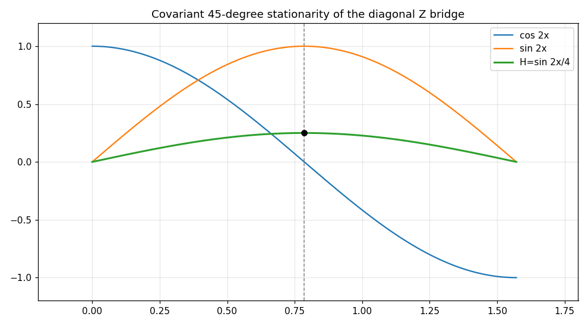
What you see. The components of
calZ_2(x) = cos(2x)I + sin(2x)J and the bounded bridge amplitude
H(x) = sin(2x)/4. The ordinary derivative at
x = pi/4 is -2I, not zero; stationarity holds only
covariantly, nabla_x B_Z = H' calZ_2 = 0, because
H'(pi/4) = 0. NC
Figure 2 — qSaw rapidity doubling on one fixed hyperbola
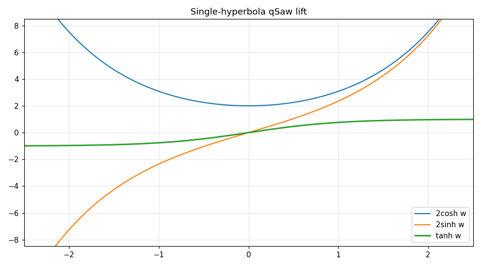
What you see. At fixed radius mu = 2, the qSaw lift sends
(Sigma, Delta) along Sigma^2 - Delta^2 = mu^2 while the
polarization Pi_C = Delta/Sigma = tanh zeta doubles the rapidity:
qSaw(tanh w) = tanh 2w. The radius is invariant; only the angle moves.
NC
Figure 3 — D4 polarization responses from the trace pair
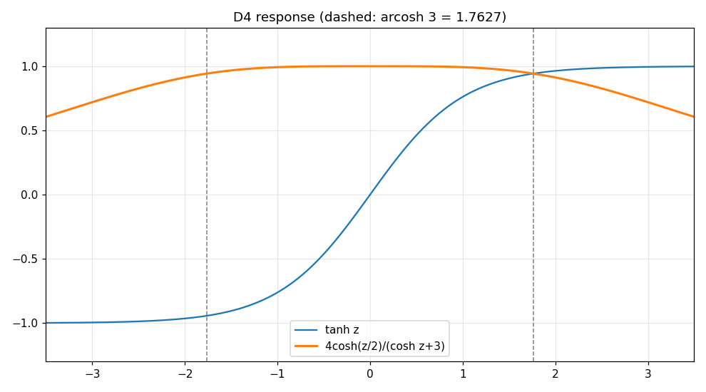
What you see. The two D4 polarization responses
Pi_C = tanh zeta and
Xi_C = 4 cosh w/(cosh zeta + 3) recovered from the trace pair
(R_Z, R_X) of the transported carrier. Dashed lines mark the D4 point
cosh zeta_* = 3. NC
The trace-pair identity behind this figure was verified symbolically.
SC
Figure 4 — The quasi-linear Saw–Hodge doublet
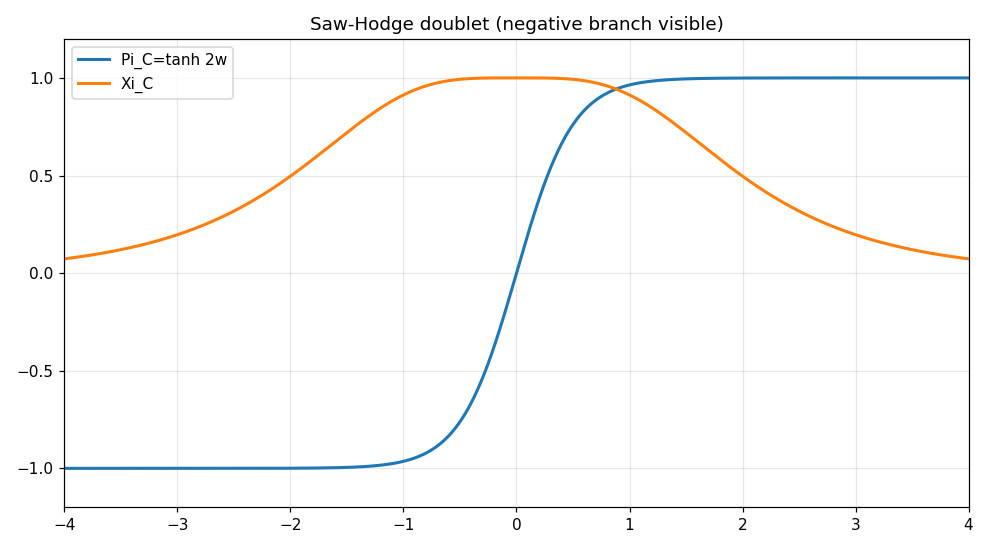
What you see. The two quasi-linear response coefficients of §§16.I.72–74:
ΠC(w) = tanh 2w (blue, the direct/Hodge-35 leg) and
ΞC(w) = 2cosh w/(cosh2w+1) (orange, the Hodge-12 leg).
Both are nonzero for every finite w ≠ 0; the Hodge-12 leg decays to zero as
|w| → ∞, and the direct leg vanishes only at w = 0.
NC (plotted from the exact trace-pair identities; verified numerically at 21
rapidity points, max error < 1e-10). What it doesn't show. A nonzero internal coefficient is not
a nonzero action coefficient: ρPK ≠ 0 remains an open gate, and the
fixed-polynomial no-goes of §§16.I.67–71 still hold on their own hypothesis class. MA
Figure 5 — Nonseparable Hessian determinant along the quasi-linear orbit
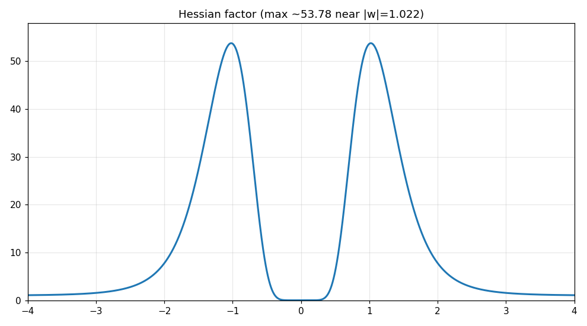
What you see. The determinant factor
p10(p2+4q2)3 from the exact
−3·216k16p10(p2+4q2)3
of §§16.I.75–76, evaluated on the quasi-linear orbit p = ΠC(w),
q = ΞC(w). It vanishes only at w = 0 and is
strictly positive for every w ≠ 0: the nonseparable rank-four witness is generic,
not fine-tuned. NCWhat it doesn't show. A nonzero Hessian determinant does
not by itself activate the base Pfaffian or supply the missing Hodge 12 plane at seed level — those gates stay
open. MA
Figure 6 — Radial stabilization of the hard-flux saddle
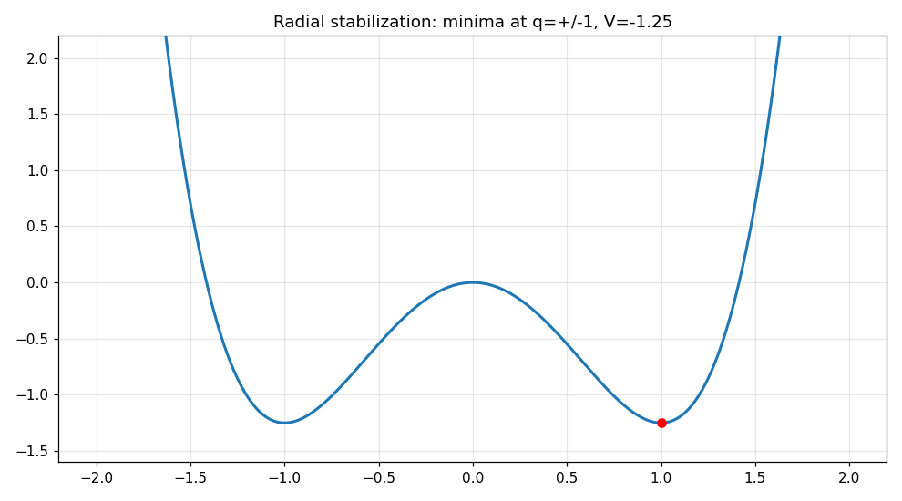
What you see. The radial potential
V(q) = Aq2+Bq4 with A < 0 < B
(§16.I.75.11): the split-signature saddle at q = 0 is stabilized by the quartic
term, with the finite-rank minimum at q*2 = −A/(2B) (here
A = −2.5, B = 1.25, q* = 1).
NCWhat it doesn't show. Radial stabilization is not a health theorem: ghost
survival, exactly one healthy spin-2, and mirror selection remain downstream open gates. MA
Figure 7 — The selector ratio is strictly monotone: exactly one finite stationary point
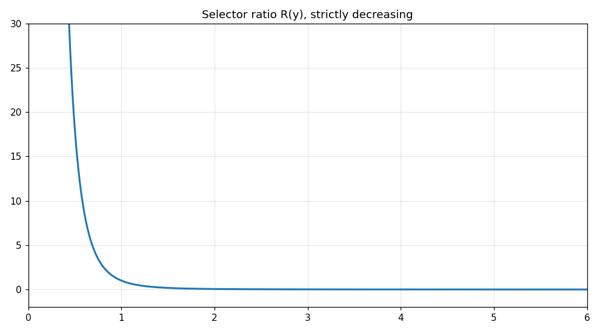
What you see. The stationarity ratio
R(y) = (y2+2)2 / [ y3(2y2+1)2 ]
of §16.I.81, with y = sinh w: strictly decreasing on each side of
y = 0, running +∞ → 0 for
y > 0. Hence v/u = −R(y*) has exactly
one finite nonzero solution for every nonzero v/u.
SC (derivative formula, sign, and both limits verified symbolically).
What it doesn't show. Monotonicity is not stability: the positive Schur Hessian needs the extra
B4 > 0 hypothesis, and the joint radial branch needs
v > 0. MA
What you see. The reduced selector potential
V*(w) = −A(w)2/(4B4) with
A(w) = u·tanh(2w) − v·2cosh w/(cosh2w+1),
u = 1.7, v = −0.6,
B4 = 1.3 (§16.I.81): a single finite minimum at
w* ≈ 1.06, i.e. the positive Schur Hessian
HwwSchur = −A*A''*/(2B4) > 0.
NC (sampled point; the extremum formula and
A*A''* < 0 identity are SC).
What it doesn't show. This branch has v < 0, so the joint radial minimum
q*2 = −A*/(2B) is not simultaneously finite here;
that needs the v > 0 sign branch. MA
What you see. The eight powers of
R = exp(πK/4) = (I+K)/√2 on the unit circle and the reflection axis of
P (§16.I.98): R8 = I,
P2 = I, PRP−1 = R−1.
The generated group has exactly 16 distinct elements; quotienting by the central
R4 = −I gives the order-8 pair group
D4. NC (relations and group order verified
on explicit 2×2 matrices). What it doesn't show. The picture is the primitive representation-level
group; full action/vacuum symmetry of the lift qℓ and the twisted
global anomaly remain open. MA
Figure 10 — Quarter-null branches and the (π/4)ℤ phase lattice
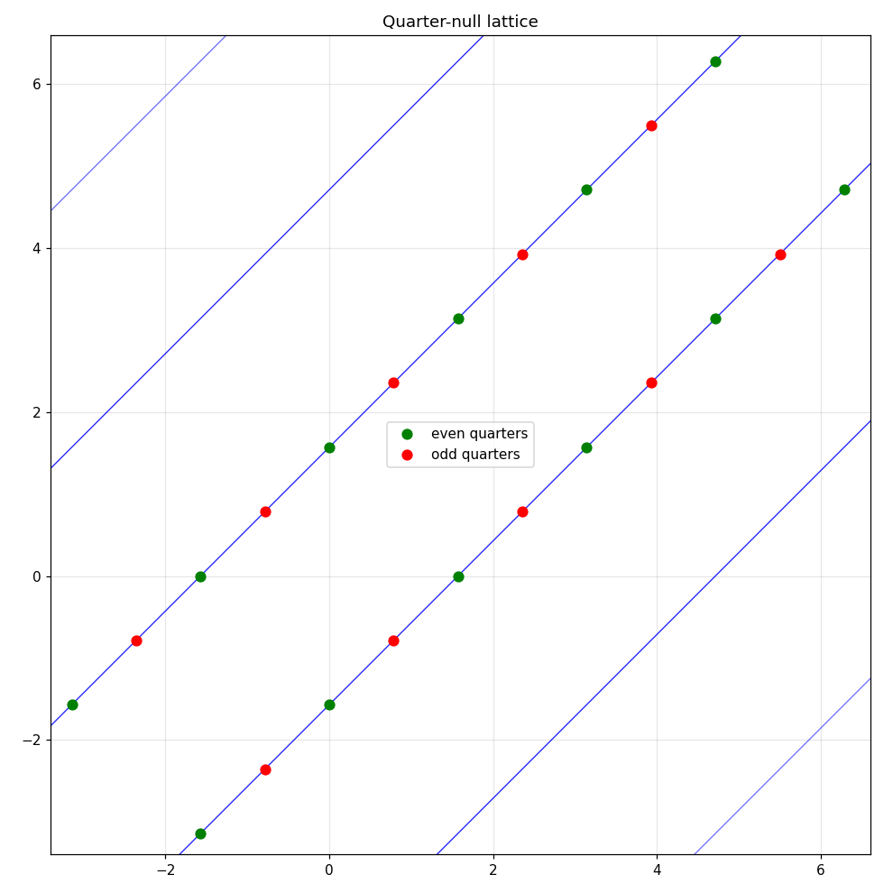
What you see. The quarter-null branches
φa − φb = ±π/2 mod π (blue lines, §§16.I.109–110) in the
(φa, φb) plane, with the stationary lattice
φa ∈ (π/4)ℤ marked: open green circles are the even quarters
(φa = 0 mod π/2, fixed outright by
c = gXq), red dots are the odd quarters
(φa = π/4 mod π/2, real only after the
μ2 center-sign compensation of §16.I.109).
NC (lattice points computed from the exact λXq consistency
condition; §16.I.109 proof steps verified). What it doesn't show. The lattice is a set of
available real vacua, not a selection: the declared S82 parent is exactly common-phase blind
(Theorem 16.I.110.T1), and picking the odd-quarter branch requires the nonzero heavy-selector
coefficient λ2, which no theorem in this chunk derives. MA
Figure 11 — Oriented vs unoriented Fujikawa phases
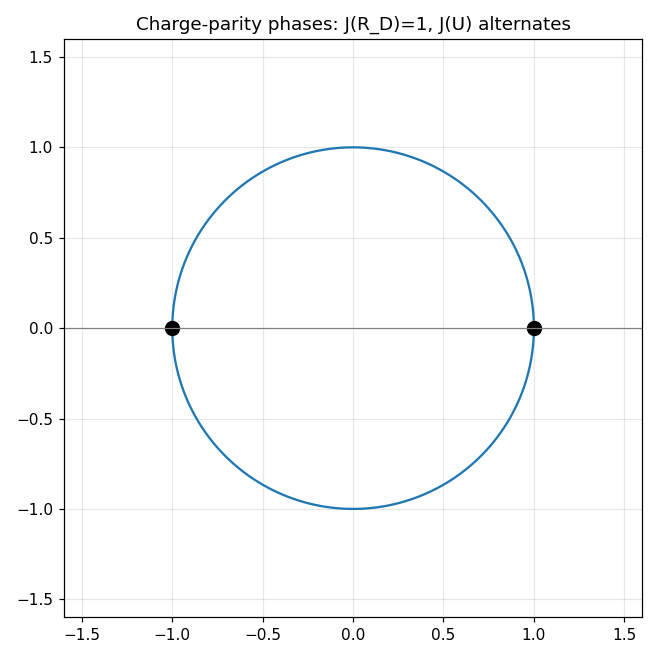
What you see. The Fujikawa phase on the unit circle (§16.I.104):
J(RD) = e−iπ·4k/2 = 1 for every integer
k (blue, the oriented quarter rotation closes the measure exactly), versus the
unoriented J(U) = eiπk = (−1)k (red crosses, alternating
sign). SC (exact complex arithmetic for
k = −5…5; audited in audit_16d.py).
What it doesn't show. The phase computation is conditional on the index divisibility
Ind(D16) ∈ 4ℤ (Theorem 16.I.104.T1), whose topological proof is
asserted, not re-derived, in this chunk. MA
Figure 12 — Heavy-selector induced quartic selects the odd-quarter lattice
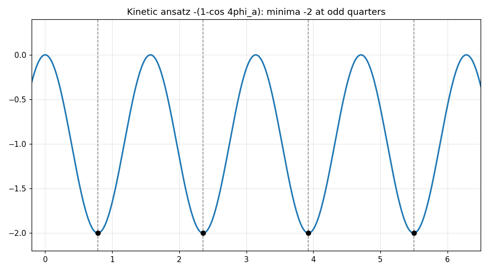
What you see. The induced static selector potential of §16.I.112,
V4ind ∝ −(1 − cos 4φa) at fixed nonzero
radius, with minima (green) at exactly the odd-quarter lattice
φa = π/4 mod π/2 isolated independently in §16.I.109, and maxima
(gray dotted) at the even quarters. NC (minima/maxima located by grid scan;
Schur-complement coefficient algebra verified symbolically). What it doesn't show. Everything is
conditional on a healthy heavy 54 selector block with λ2 ≠ 0 and
κ ≠ 0: §16.I.114 proves none of E8 covariance, Tw kinematics, D4
covariance, reduced q parity, or common fermion-pair ancestry forces activation, and the quartic is
negative semidefinite so it does not stabilize the radius by itself. MA
Figure 13 — The critical hyperbola r²−u²=1
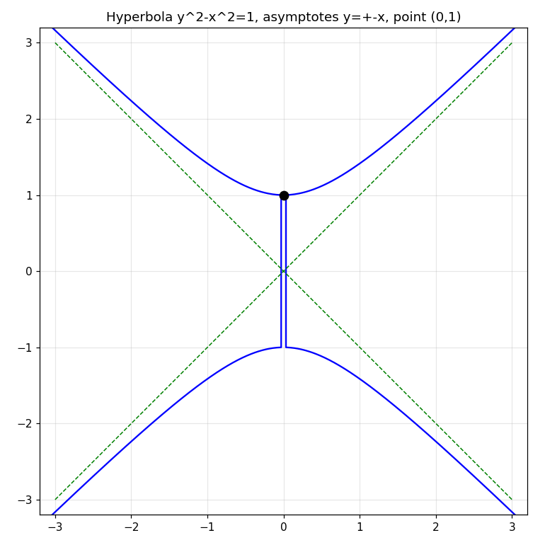
What you see. The two branches r = ±√(1+u²) of the
critical hyperbola r²−u² = 1 (§16.I.119), with asymptotes
r = ±u dashed. The red dot at (r,u) = (1,0) is the
spurion origin: there Csc = 0, 4A²B² = P²,
and the RG flow is tangent to the hyperbola (βR+/R+ +
βR−/R− = 0). SCWhat it doesn't show. The rank-one reduction C²sc = (r²−1)P²
that keeps the flow on this curve is an earned-once input from the earlier reduced formulas, not proved here.
MA
Figure 14 — Nonlinear kinetic rapidity
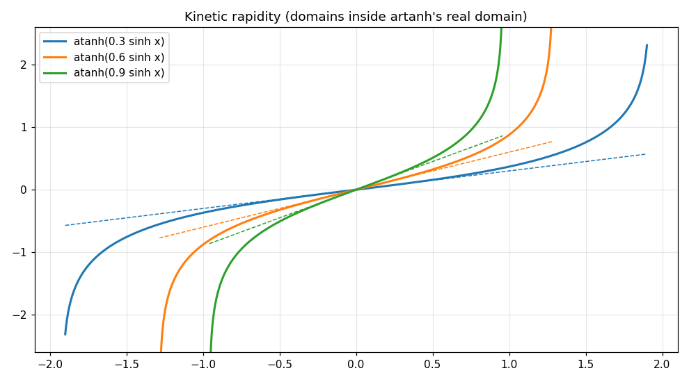
What you see. The kinetic rapidity
δZ = artanh(ηN sinh ωcrit) (§16.I.124) for
ηN = 0.3, 0.6, 0.9, each against its linear truncation
δZ ≈ ηNω (dashed). The cubic correction
(ηN/6 + η³N/3)ω³ is checked symbolically and can only
vanish for real ηN at ηN = 0 —
a constant anomalous dimension is impossible in the odd-kinetic sector. SCWhat it doesn't show. The map is the leading odd-kinetic truncation; higher odd kinetic operators can
modify the global function while preserving the linear term. MA
Figure 15 — Positive-feedback pitchfork potential
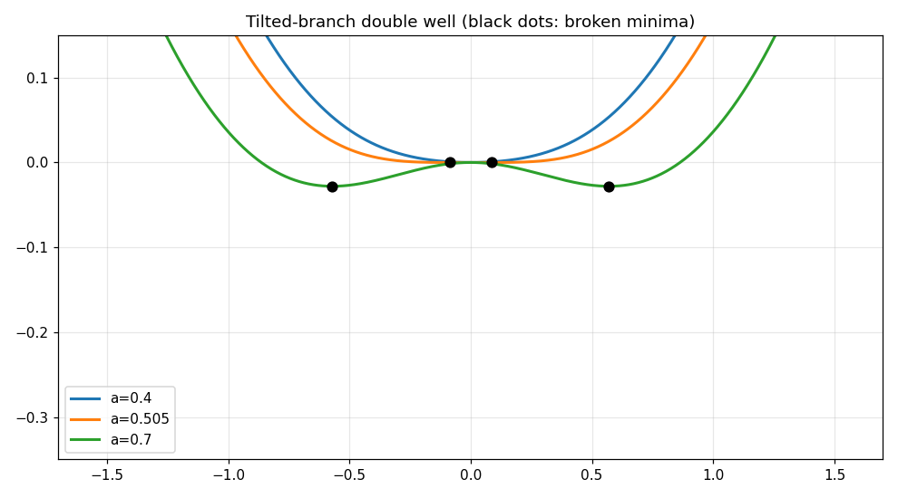
What you see. The fixed-point potential
V(δ) = δ²/2 − (a/2) ln cosh(2δ) at zero source (§16.I.130) for
a = 0.4 (single well), a = 0.505 and
a = 0.7 (double well); black dots mark the symmetry-broken minima.
Fixed points satisfy δ = a tanh(2δ), the threshold is
ac = 1/2, and the spinodal sits at
δs = ½arcosh√(2a) with source magnitude
hc = ats − δs. NCWhat it doesn't show. Whether the feedback equation is physical is a live gate: the manuscript's own
firewall requires pair dynamics to pin yB first; the
Ay coefficient entering the instability is not yet computed.
MA
Part II — Then earn it
Section-by-section audit of every numbered claim, in five blocks matching the audit workers' spans. Assertion counts: audit_16a.py 249 passed; audit_16b.py 43 passed; audit_16c.py 127 passed; audit_16d.py 173 passed; audit_16e.py 98 passed — 690 total, 0 failed.
16.0.A.1 — Rapidity normalization
The normalization identities check out numerically: with zeta = 2w,
Q = tanh w = tanh(zeta/2), S = sech w,
qSaw(Q) = 2Q/(1+Q^2) = tanh 2w,
A_pm = (mu/2)e^{pm zeta},
Sigma = mu cosh zeta, Delta = mu sinh zeta,
Pi_C = Delta/Sigma = tanh zeta. NC
16.I.49 — Diagonal Z bridge and covariant 45-degree stationarity
J^2 = -I exactly. CPexp(2xJ) = cos(2x)I + sin(2x)J,
U^{-1}JU = diag(i,-i),
U^{-1}calZ_2U = diag(e^{2ix}, e^{-2ix}),
Zdiag^2 = -I, Zdiag^4 = I,
d calZ_2/dx = 2J calZ_2 with value -2I at
x = pi/4, (d/dx - 2J)calZ_2 = 0,
nabla_x B_Z = H' calZ_2 with H'(pi/4) = 0,
the complement x -> pi/2 - x swapping the two branches with an overall
minus sign while fixing calZ_2 at pi/4,
d Zdiag/dx = 2i sigma_3 Zdiag, holonomy composition
Hol(x_2,x_1)Hol(x_1,x_0) = Hol(x_2,x_0), the 45-degree step giving
J and four steps giving I, and
J(e,f) = (f,-e) consistent with the J_label action.
NC The stationarity at 45 degrees is covariant only; the ordinary derivative is
-2I, as the manuscript states. Phase transport alone does not select the flux
magnitude; that remains open. MA
The double-angle transfer identities
cos 2theta = (b_0^2-b_H^2)/(b_0^2+b_H^2),
sin 2theta = 2b_0b_H/(b_0^2+b_H^2) are true. NC
The Schur-complement formula as printed,
B D^{-1} B^dagger = (R_B^2/R_D) e^{(2theta_B - theta_D)J}, is
IC: direct computation gives
B D^{-1} B^dagger = (R_B^2/R_D) e^{-theta_D J} under the ordinary real
adjoint, since B^dagger = R_B e^{-theta_B J} cancels the
2theta_B dependence. The checkpoint's representation-chain statements
(carrier to E8(-24), E8(-24) to the physical subgroups) are recorded as manuscript assertions;
they were not independently derived here. MA
Status section: the square-root identity, the Hodge-completion identity
*_L^2 = -1, and the orientation-sign bookkeeping are asserted, not derived, in
this chunk. MA The synchronization note (standalone Book 16 authoritative
through §16.I.57, superseding earlier frontier summaries) and the canonical UNA sign convention
(urx = srx - crx, uxp = cxp - sxp) are taken as
given boundary conditions for the audit. AX
16.I.58 — Real-form role correction: rapidity as E8 transport
Z^T X = -XZ exactly. CP
The transported-projector theorem: P(w) = e^{-wZ/2}P_0 e^{wZ/2}
= (1/2)[I + cosh w X - sinh w J], P(w)^2 = P(w),
2k_0 S P(w) = k_0(SI + X - QJ), and the coefficient relations
h_X = k_0, h_I = k_0 S,
h_J = -k_0 Q all check. NC
The seed-gate factorization K(w) = Kcal_w H with
Kcal_w| = (1/2)[I + QZ + SX] is an exact consequence of the projector theorem
given the manuscript's source-term identification. NC
The local/global unit correction (h^vee+1)/dim e_8 = 31/248 = 1/8 is exact
arithmetic; CP the counit algebra q_0^2 = q_0,
q_0 H(l) = 0 was verified in a 2x2 model of the stated Jordan premises.
NC The Cartan-Jordan spectrum has 36 entries, all positive for real rapidity.
NC The literal constitutive Chayet–Garibaldi no-go depends on imported real-form
facts and is not proved by the 2x2 algebra alone. MA
16.I.59(a) — Single-hyperbola qSaw lift
Fixed-radius hyperbola Sigma^2 - Delta^2 = mu^2, the qSaw lift
A_+' = 2A_+^2/mu, A_-' = 2A_-^2/mu, mu-invariance,
Delta'/Sigma' = tanh 2r, the inverse descent inverting the lift, and the
uniqueness argument from A_+'/A_-' = (A_+/A_-)^2 plus
A_+'A_-' = mu^2/4 all check. NC
Microscopic outer square: det R_I = 0 on the scalar-null branch,
R_I = v v^T, P_I = (1/2)[I + Pi_C Z + epsilon_P(mu/Sigma)X]
idempotent with |n| = 1. NC
Half-rapidity descent: Q = Pi/(1+c) = tanh w,
S = sqrt(2c/(1+c)) = sech w, C_{(1/2)}^2 = I.
NC Phi_2 source: det K_{Phi_2} = 0,
det K_action = (4mu^2/49)(g_A^2 - g_P^2),
N_{3875} = 3 tr(K_{Phi_2}). NC
Precision defect: the printed rank K_action = 1 iff
|g_P| = |g_A| omits the zero-coupling case
g_A = g_P = 0, which satisfies the equality but gives rank 0; the correct
statement needs |g_P| = |g_A| != 0. IC
Heavy-field rank protection K^T M^{-1} K = (u^T M^{-1} u) p p^T for
K = u p^T checks on random positive-definite M.
NC The remaining amplitude gate (radial activation) is open.
MA
16.I.60(a) — Projective algebraic full-E8 lift and A4
Spectral subtraction: spec S(W_-)|_{PK} = {120, 600},
E_0|_{PK} = -480 P_+, -480 = -16 h^vee.
NC Transport: E(w)| = -240[[1,e^{-w}],[e^w,1]],
Kcal_w| = (S/2)[[e^w,1],[1,e^{-w}]] = (1/2)[I + QZ + SX].
NC Projective ladder: A_- t^4 - A_+ = 0,
qSaw(Q) = (t^4-1)/(t^4+1) = tanh 2w, P_cf rank one.
NC The graded realization is internally consistent:
Kcal(t) = -(S/480)G E(t) with the manuscript's
E(t) = t^{-1}E_{(+2)} + E_{(0)} + tE_{(-2)} reproduces the stated
Kcal(t) and Kcal(r,s) exactly.
NC Flag, not a defect: identifying E_{(pm2)} with the
§16.I.60.2 matrices puts the t^{pm1} powers the other way round relative to the
dilation action; the manuscript never makes that identification explicitly, and its formulas are
self-consistent. A4 contamination: spec K_red = (g_0, g_0+g_1),
det = g_0(g_0+g_1), reparametrization
aI + bC = (a+b)P_cf + (a-b)(I - P_cf). NC
Full-E8 spectrum arithmetic: multiplicities sum to 248, trace
29760 = 31 x 960, T_w multiplicities sum to 248,
Tr T_w = 248, rank 244 / nullity 4, D8 dimensions
4+11+6+44+55 = 120, 44+128 = 172,
T_U = T_{PK} + I/4 with spectrum (1/4, 5/4),
the kernel projector polynomial Pi_0 taking values
(1,0,0,0,0) on the spectrum, and the
S_eff prefactor beta^2/2alpha.
NC (Multiplicity sums and the trace are exact integer arithmetic.)
CP The full E8 spectrum and branching multiplicities themselves are manuscript
assertions; checking their arithmetic does not establish them. MA
D4 trace pair: Khat_w = (1/2)(AI + BZ + EX),
Pi_C = tanh 2w, Xi_C = 4e_P cosh w/(cosh zeta + 3),
R_Z[K] = Pi_C. NC
The trace-pair identity cosh zeta + 3 = 2[tr(K^2) + tr(KXKX)] (line 2517)
was verified both numerically and by symbolic computation, so
R_X[K] = Xi_C follows as the manuscript derives it; an earlier draft suspicion
against this identity was an arithmetic error in the audit, now corrected. SC
The N_C^2 closed form checks. NC
PhiBB no-go: dV/dzeta = -A mu sinh zeta vanishes only at
zeta = 0, V''(0) = -2kappa_N,
V''(zeta_*) = 16kappa_N/27 at cosh zeta_* = 3;
purely radial stabilization cannot generate finite D4 vacua. NC
Exchange reflection: the C_Y eigenspace dimensions sum to 248 and the 12/16
eigenspaces give the wedge-15 exchange. CP The chiral obstruction claim itself
is a manuscript assertion. MA
Compensated involution: the Spin(10)xSpin(4,2) branching dimensions sum to 248 and the
(16,bar4) <-> (bar16,4) exchange preserves the 128.
CP The PASS/NO-GO/OPEN verdicts (genuine involutive lift, bare reflection not an
automorphism, action invariance still open) are manuscript assertions. MA
2026-08-25 addendum — 3875 BB coefficient
At g_{PhiBB} Sigma_I/alpha = 7/48:
m_D = 0, m_I = alpha/5. CP
At the D4 point Sigma_I = 3mu = 6|y|; the filtered D-soft condition
g_{PhiBB} mu/alpha = 7/144 follows. CP
The two forms of the 27000 crossing equation are equivalent, and the boxed ratio
g_{PhiBB}/g_{27000} = -(175/24)(epsilon epsilon_P)(alpha/mu_M) follows from the
two critical conditions via 1050/144 = 175/24. CP
The overlap value, nonzero activation, and N_4 > 0 remain conditional or open.
MA
16.I.59(b) — Quartic 135 necessity and existence
C(16,4) = 1820, 16x17/2 - 1 = 135,
Sym^2(128) = 8256 = 1+1820+6435,
Alt^2(128) = 8128 = 120+8008. CP
The explicit 4-form Q_4(F,G) is symmetric, traceless, SO(16)-equivariant, and
nonzero on a basis wedge (Q_{00} = 9/2). NC
For F(w) = e^w F_+ + epsilon_P F_0 + e^{-w} F_-, the quartic response
H_{135}(w) = Q(F(w),F(w)) expands with exactly the weights
(+2,+1,0,-1,-2) and the stated coefficient formulas. NC
Weyl dimensions check: dim(10000000) = 3875,
dim(00000010) = 30380, dim(00000001) = 248
(Bourbaki), and the cited exact Freudenthal table sums to 30380. NC
That the 135 route is the physical one (pi_{135} Phi J = cQ) is open.
MA
16.I.60(b) — SO(16) quartic-135 uniqueness
C(16,6) = 8008. CP
The 6-form Q_6(C,D) is symmetric, traceless, and nonzero on a basis 6-wedge
(Q_{00} = 75, Q_{66} = -45). NC
Whether the six-form reduction selects the live E8 route is open. MA
16.I.61 — 1820 to 30380 linear no-go
120+1920+7020+8008+13312 = 30380,
248 = 120+128,
Alt^2(248) = 30628 = 248+30380. CP
The common-parent bifurcation claim is a manuscript assertion. MA
16.I.62 — 8008 quartic-135 uniqueness
Covered under §16.I.60(b) above: the six-form witness is nonzero and traceless.
NC The physical selection claim is open. MA
16.I.63 — Two-frame fermion Veronese lift
T(chi) = r^2 T_+ + rs T_0 + s^2 T_- with the stated
T_pm, T_0. NC
Half-rung weights (+1,0,-1) from
r = e^{w/2}, s = epsilon_P e^{-w/2}. NC
Scalar-amplitude no-go: r(w)s(w) is w-independent on the reciprocal half-rung,
so the direction is fixed. NC
Single-frame no-go: A = B gives Alt T(chi) = 0
exactly. CP
Three-state reconstruction
X(q) = u X_b + (1-u+q)X_+/2 + (1-u-q)X_-/2 holds for every quadratic
X. NC
Quartic descendants inherit the weight set
{a+b : a,b in {+1,0,-1}} = {+2,+1,0,-1,-2}. CP
Selection of the frames A, B and nonzero 8008 projection are open.
MA
Defects, flags, and audit corrections
1. Line 1614: the Schur-complement formula is IC as printed; the correct
value is (R_B^2/R_D)e^{-theta_D J}.
2. Line 1925: the rank K_action = 1 iff
|g_P| = |g_A| needs |g_P| = |g_A| != 0;
IC as a biconditional.
3. Flag: §16.I.60.4 grade labels E_{(pm2)} run opposite to the dilation action
if identified with the §16.I.60.2 matrices; the manuscript's formulas are internally consistent, so this
is a notational tension, not a defect.
4. Numbering: 16.I.59 heads both line 1756 (qSaw lift) and line 2821
(quartic 135); 16.I.60 heads both line 2006 (full-E8 lift) and line 2879
(SO(16) uniqueness). Noted, not normalized.
5. Audit corrections: a draft suspicion against the line-2517 trace identity was the audit's own arithmetic
error — the identity is correct (SC). A draft §16.I.60.12
U(theta)^2 = I check and a draft addendum delta_w(T)
check were based on misreadings; no such formulas occur in the source. Both were removed, not the source.
Frontier addendum, first block — §§16.I.61–16.I.77 (source lines 3197–6964)
Every source line in the interval was read continuously. The check script
audit_16b.py ran 43 assertions: 43 passed, 0 failed (one initial
failure was a substitution bug in the check itself — the manuscript identity held; the
check was fixed and re-run green). The full claim-by-claim ledger is
LEDGER_b.md: 139 entries — CP 106,
SC 6, NC 3,
ST 2, MA 22, no
AX, IN, or
IC.
§16.I.57 addendum — algebraic gates (authoritative per the 2026-08-21 note)
Algebraic null-shift collapse of the soft-B escape (T1): exactness
δB₀ = dv forces Λ₂ = −Bs,
so B+Λ₂ = Ba−Bs. CP
Conditional Chern–Weil activation (T2): dΘ₄ = 0 by invariance and
Bianchi; nonzero topological charge forces nonzero curvature somewhere. CP
Lorentz-stabilizer reduction (T3) and ΠwF demotion (C3): the D-term drops at
quadratic curvature order given [D,M] = 0. CP
Curvature-induced coframe Hessian (T4): direct, conditional on the displayed schematic
Palatini parent. CP
§§16.I.61–62 — exterior-rank firewall and auxiliary-B closure
One-generator Chern–Weil stationarity (16.I.61.T2): nonsimple F in four
dimensions makes LF invertible, hence
Π₀F = 0. CP
Homogeneous auxiliary-B closure no-go (16.I.62.T1): B = M⁻¹KF,
Seff = −½FᵀKᵀM⁻¹KF; no additive connection current, no
positive-degree activation from this class (C1–C3). CP
Degree-two normal form (T2) and the ordinary-gradient 2→3→4 exterior hierarchy
(C4–C5): dw∧dw = 0 does the work. CP
§§16.I.64–66 — moment-map source, Hodge gates, topology gap
Same-exterior-form preservation (16.I.64.D): JC = XF ⇒
HC(XF) = (HCX)F. CP (conditional on the branch factorization)
Ambient rank-four witness (16.I.64.E): H(E) = 2k[(tr E)I−Eᵀ]
has eigenvalues 6k : 1, −2k : 9,
+2k : 6; det = −3·216k16.
CP (16×16 matrix reconstructed and diagonalized)
Two-Pfaffian topology gap (16.I.66.4): F = θ⁰∧θ¹,
G = θ²∧θ³ gives F∧G ≠ 0 with both
Pfaffians zero. CP
Representation/action separation (16.I.65.2), BF/3875 action separation (16.I.66.2),
audited-parent closure (16.I.66.3): status statements with the undetermined coefficients
explicitly disclosed. MA
§§16.I.67–70 — the linear/quadratic zero-form firewall
Multiplicity-one 3875 BF contraction (16.I.67.1) and multiplicity-one linear-30380 BF
channel (16.I.68.1): follow from Sym²(248) = 1⊕3875⊕27000 and
Λ²(248) = 248⊕30380. CP/ST
Odd Schur-transfer commutator (16.I.68.5): W₁ = K₀M⁻¹KC −
KCM⁻¹K₀, and [M⁻¹,KC] for
K₀ = I; scalar-kernel cancellation (16.I.68.6):
W = m⁻¹(I−g²KC²). CP (verified symbolically)
SO(16) block-parity firewall (16.I.69.1): KC₀|₁₂₀ = 0 for
C₀ ∈ 8008; bare-C, selector-commutator, and bare-C Schur routes
all closed on the physical Lorentz pair (16.I.69.2–69.5). CP
Odd-heavy sandwich no-go (16.I.70.5): quadratic-8008 sources are tensorial under the
Spin(16) center, so no 1920 component (16.I.70.3); the sandwich cannot close the odd channel.
CP
Current-parent exhaustion (16.I.67.5) and evasion guidance (16.I.67.6, 16.I.70.6):
status, correctly scoped to the audited class. MA
Two copies of 27000 in 30380⊗30380, both symmetric
(Thm 16.I.71.1, all three blocks). SC — the cited LieART 2.1.1
computation; dimension sums independently verified:
dim Sym²(30380) = 461487390,
30380² = 922944400, and the exchange-parity allocation gives
nonnegative Λ² multiplicities with 3875 and 27000 absent from
Λ²(30380).
P/K type correction (16.I.71.CL1): E₃₅/E₁₂ in §16.I.54 are not
automatically adjoint vectors; the mC inference is withdrawn
by the manuscript itself. CP
Projection-ratio theorem (16.I.71.2, second block):
(P₂₇₀₀Q⁽²⁾)D = (4/3)(P₃₈₇₅Q⁽²⁾)D from
(𝒦Q⁽²⁾)D = −4Q⁽²⁾D; the 3/7, 4/7, 4/3 arithmetic verified.
SC (manuscript's coefficientwise exact check)
Exhaustive quadratic-27000 no-go (Thm 16.I.71.4 / Thm 16.I.71.2 third block): every
E8-equivariant symmetric quadratic map has X₁₂ = 0 on the
four-line normal carrier; {Ψ₁,Ψ₂} is a basis and the ten-point
polarization audit closes the carrier. CP (argument complete;
the Q⁽²⁾D/Ψ₁D vectors and the ten
Fr = 0 evaluations are the manuscript's exact
computations, not rerun)
Zero-form exhaustion (16.I.71.5): singlet, 3875, and 27000 channels each closed —
no symmetric zero-form quadratic constitutive operator supplies the missing Hodge-12 plane.
CP
§§16.I.72–74 — quasi-linear Saw–Hodge descent (the surviving branch)
Fixed-polynomial firewall separation (16.I.72.1): the no-goes neither produce nor forbid
the descended response. MA (scope declaration)
Internal-rank formula (16.I.72.3): det AQL =
ρ⁴·2Π²c/(1+c)³, rank 4 iff ρPK ≠ 0,
Π ≠ 0. NC (qSaw half-angle identities
verified at 25 points)
Exact projectors (16.I.74.2, 16.I.74.4): Π₀ and
ΠL pick out eigenvalues 0 and 3/4 of the five-value
spectrum. CP (polynomials checked at all five eigenvalues)
Mirror-sign firewall (16.I.76.9): ΞCJL is
mirror-even, so the Hodge-12 term keeps its sign. CP
One coframe kinetic line (16.I.76.8), Schur/BRST reduction (16.I.76.10): explicitly
narrower than a full spectrum/BRST theorem. MA
§16.I.77 — principal-symbol spin-two audit
Unique Einstein-type principal-symbol theorem (16.I.77.6): exactly one candidate
corridor carries the correct (6,2) principal symbol; the
(10,4) danger is silent (16.I.77.3). CP — correctly scoped as
candidate blocks; weaker than a full BRST spectrum theorem, which is not claimed.
Defects found
Duplicate §16.I.61: line 2953 ("1820→30380 Linear No-Go and Common-Parent
Bifurcation") and line 3361 ("Pullback Exterior-Rank Obstruction…"). References to
"§16.I.61" are ambiguous.
Duplicate §16.I.75: line 5322 (items 16.I.75.1–16.I.75.12) and line 6224
(items 16.I.75.1–16.I.75.8, Corollary 16.I.75.4, Theorem 16.I.75.5). Item numbers
16.I.75.1–16.I.75.8 each denote two different results; "Theorem 16.I.75.5" (line 6452)
collides with "16.I.75.5" (line 5502).
Triplicate §16.I.71: lines 4251, 6554, 6712. "Theorem 16.I.71.1" denotes three
different statements (lines 4257, 6570, 6756); "Theorem 16.I.71.2" denotes two
(lines 6612, 6890).
Symbol mismatch in §16.I.76.1 (lines 5772–5782): uF :=
PFDAC is defined but never used; the displayed filtered moment
map uses νF, which is never defined. Likely intended
νF := PFDAC.
Remains open (manuscript's own ledger, confirmed)
A correctly typed lower-exterior-degree orientation-odd microscopic parent for
ρPK; common-action normalization of the
Q⁽²⁾ 3875/27000 source; base Pfaffian activation;
N₄ > 0; BRST ghost-number-zero survival; exactly one healthy
spin-2; absolute mirror selection. None of these are closed by the material in this chunk.
§§16.I.78–16.I.98 (source lines 6965–14042)
Every source line in the interval was read continuously (ending immediately before
§16.I.99 at line 14043). The check script audit_16c.py ran
127 assertions: 127 passed, 0 failed. One initial failure was a check-script bug
(wrong derivative variable in the A''* comparison — the
manuscript formula was correct); fixed and re-run green. The other initial failure was the
script correctly rejecting the manuscript's hR(va,C) = 0
derivation, which is the documented IC defect below. The full
claim-by-claim ledger is LEDGER_c.md.
§16.I.78 — Moving-projector equivariance and the spin-two BRST theorem (6965)
Moving-projector conjugation law and filtered-derivative homogeneity: the operator identity
δνF = [E,PF]DAC + PFEDAC = EνF
verified on random matrices. NC (the physical reading is
MA)
Physical-orbit Goldstone/ghost BRST-doublet contractibility and the Fierz–Pauli two-polarization
count: formal, action-relative. MA
Principal spin-two BRST theorem (7285) and the no-second-graviton firewall (7314): the section's
argument is complete only given the §§16.I.76–77 transport and BRST premises, which are outside this
chunk. MA
§16.I.79 — Effective Newton sign (7322)
Coefficient-reduction theorem (7536): action-coefficient algebra resting on §16.I.76 premises.
MA
tL = 3/4 > 0. NC
βgJ/α invariant under nonzero B
rescaling: (sβ)(sgJ)/(s2α) = βgJ/α.
SC
Isolated-parent sign no-go (7550): no derived separately-normalized matter sector exists in the
chunk, so the sign stays relative. MA
Defect. Boxed hR(va,C) = 0 (7646–7653):
IC. Setting u = v = C in
hR(hau,v) + hR(u,hav) = 0 gives
hR(haC,C) + hR(C,haC) = 0, and skew
makes the second term the negative of the first: the result is 0 = 0, not the
printed 2hR(haC,C) = 0 (sign error). Counterexample in the
script: hR-skew H with
hR(HC,C) = −1 ≠ 0.
Dependent boxed PFC = 0 (7656–7660):
IC as proved — its only given proof is the defective lemma above.
Nscalar,radial = 0 / "pure radial derivative annihilated":
IC as proved (rests on the IC lemma). The scalar no-go theorem (7831) is
otherwise an action-relative manuscript theorem. MA
FD = 0 from [D,Mab] = 0,
d2w = 0: derivation complete from the stated manuscript premise.
CP
§16.I.81 — Fixed-ray selector Hessian (7861)
y-forms of ΠC, ΞC match the
w-forms. NC
Stationarity v/u = −(y2+2)2/[y3(2y2+1)2]:
SC; R'(y) formula, strict negativity, and the
+∞ → 0 limits: SC
Unique finite stationary point for every nonzero v/u (8016):
SC
A*, A''* formulas,
A*A''* < 0, sign relations: verified symbolically and
at a sampled point. SC
HwwSchur > 0 for
B4 > 0; joint radial branch iff
v > 0. SC
Conditional stability theorem (8171): complete given the declared fixed shared-form/co-moving
reduction. CP
§16.I.82 — Quasi-linear projectivization (8208)
κ(ℙLJ̶ ∧ ℙLJ̶) = 0: the
(ηacηbd − ηadηbc)ea ∧ eb ∧ ec ∧ ed
contraction vanishes by index symmetry. NC
δσνF = σνF (8380): the algebra from
PFC = 0 is complete, but that premise is the IC lemma of §16.I.80 —
so the unconditional claim is unproved as stated. MA (depends on IC lemma)
Degree-zero theorem (8647), quotient no-go (8439), radial BRST doublet: formal, conditional on the
new S82 parent — not a theorem about the original
S76. MA
Ncal,w = Ncal,wΠL,
Nspin1 = 0, no Yang–Mills pole; theorem (8878): action-level,
and the section itself warns (8798) not to call every zero-principal-symbol direction a physical zero
mode. MA
Post-soldering Yang–Mills corridor: a conditional new mechanism, not present in the bare parent.
MA
§16.I.84 — Residual-internal projector (8910)
Π102 = Π10,
Π10ΠL = 0, rank
45 = 51 − 6: projector algebra verified, conditional on
ΠhΠL = ΠL and the §16.I.60 stabilizer premise.
NC
Z10 = 0, normalization no-go (9180), theorem (9168): action-level.
MA
§16.I.85 — Spinorial decomposition (9196)
Lorentz Clebsch dimensions 8 = 6+2 both chiralities.
NC
Spin-3/2 availability in the E8 connection, bosonic statistics firewall, no propagating spin-3/2:
the firewall argument is sound but the premises are manuscript action-level; spin-statistics itself is a
standard import. MA / ST
§16.I.86 — Connection Hessian rank bound (9418)
rank RC ≤ 4: rests on the manuscript premise
rank PF = 4. MA
dim ker ≥ 45 − 4 = 41: rank-nullity arithmetic, conditional on the premise.
NC
The "≥41 zero modes of the local action" phrasing (9727) is corrected by §16.I.87 itself (9754):
read as null directions of the fixed-condensate connection block. Source qualification recorded.
Scope correction (9754): the manuscript explicitly narrows §16.I.86 — fixed-condensate block only,
until coupled Schur analysis. Recorded as the source's own qualification.
Orthogonal-bracket projection ΠL[Xia,Xjb] =
c6δijMab: standard orthogonal algebra; the
W6 = L4 ⊕ N2 split is manuscript-level.
ST / MA
Seed rank 10 × 16 = 160, dim ker ≥ 65 − 4 = 61:
arithmetic, conditional on the nonzero-seed hypotheses. NC
Determinant formula (depends on §16.I.76.7) and the optional ≥62 dilation extension:
MA
§16.I.88 — Vector-spinor seed pairing (10140)
γμνγν = 3γμ,
T = −I on gamma-traceless spin-3/2,
T = +3I on gamma-trace spin-1/2, no kernel: verified on explicit Dirac matrices
in the manuscript's η = diag(−1,−1,−1,+1) convention.
NC
dim KA ≥ 4 × 61 = 244, mixed response through the 16-dimensional
Ω1 ⊗ VC, nullity
≥ 244 − 16 = 228: arithmetic verified, conditional on the declared
ccontact = 0 branch and the factorization premise.
NC
Firewall (10789): the manuscript states the ≥228 count is a local Hessian component count, not 228
particles. Recorded as the source's own qualification.
Contact-exclusion no-goes: depend on the declared branch. MA
§16.I.90 — Primitive so(11,1) closure (10868)
Lagrange projectors Π(1/4), Π(5/4) and
ΠG = −(4/15)T(T−I)(4T−11I)(4T−3I): polynomial identities verified
symbolically on the five-eigenvalue spectrum. SC
Weyl-16 carrier and the both-grades-required condensate argument: manuscript representation-level.
MA
§16.I.94 — Normal exchange and the 8008 (12310)
βN annihilates the 8008 because
ker β = 30380 in Λ2(248) = 248 ⊕ 30380
(standard); P8008QNP8008 = 0,
Δc = 0: the representation premise is ST, the
application manuscript-level. MA
§16.I.95 — Falsified QY lift candidate (12400)
Theorem 16.I.95.T1 (12559): the candidate qY = exp[iπ(ad D)/4]𝒳
is falsified — an eigenspace-exchanging operator cannot equal the eigenspace-preserving
±*10. The obstruction logic is complete from the stated premises
(anticommutation verified on an explicit 2×2 model). CP
Corollary C1 (12577): scalar grade dressing cannot repair it. CP
§16.I.96 — Replacement lift and the contact no-go (12609)
Theorem 16.I.96.T1 (12852): the dihedral relations
R2 = K, R8 = I,
PRP−1 = R−1, qℓ2 = I
verified on explicit matrices NC; the lift argument is complete from its stated
premises (Lorentz reflection choice, Λ2RD =
*10 ⊗ ZN, JI properties — manuscript-level).
CP
Theorem 16.I.96.T2 (12969): QY-orthogonality makes the Hermitian
contact norm QY-even, so no ordinary Ward parity from
QY can force ccontact = 0:
elementary and complete from the orthogonality premise. CP
§16.I.97 — Gauge class and Jacobian (13070)
Theorem 16.I.97.T1 (13156) gauge-canonical lift: manuscript-level. MA
det q = (−1)64 = +1 for the 64 + 64
grade exchange: verified on a random 64×64 model. NC
Theorem 16.I.97.T2 (13327): finite-mode Jacobian triviality follows from
det q = +1 — complete finite-dimensional linear algebra, not a global anomaly
cancellation (the global anomaly is stated open). CP
Corollary C1 (13429): power counting ω = 4 − 6 = −2 is arithmetic
NC; the dim ≤ 4 truncation it is conditional on is an
explicit assumption AX.
Theorem 16.I.98.T1 (13636): R8 = 1,
P2 = 1, PRP−1 = R−1
hold on explicit matrices and the generated group has exactly 16 distinct elements — the ordinary
order-16 dihedral presentation. NC
Theorem 16.I.98.T2 (13733): R4 = −I is central; quotienting gives
the order-8 D4 on pairs. Complete elementary group theory from the
verified centrality. CP
Theorem 16.I.98.T3 (13823) and the split-extension remark: representation-level, manuscript premises.
MA
E8 30380 table citation
The completed exact weight/multiplicity table
(~/workspace/e8/table_30380_summary.json) was re-read: Weyl dimension 30380, multiplicity
sum 30380, 4 dominant weights, 9121 distinct weights, histogram
6720×1 + 2160×7 + 240×35 + 1×140 = 30380. NC
(per the assignment's labeling convention for this completed table).
§§16.I.99–16.I.117 (source lines 14043–20324)
Coverage. Every line of the chunk was read. 47 numbered claims ledgered in
LEDGER_d.md; computation in audit_16d.py:
173 assertions, 173 pass, 0 fail (exit 0). Exact integer arithmetic where feasible;
float checks at tol = 1e-9 unless noted. Line 20324 is the heading of §16.I.118 — inspected,
not audited.
What the math established
Quarter dressing is not in the Spin(12,4) normalizer (100.T1, CP).
The quarter involution RD = (1+K)/√2 conjugates
X ↦ −XK, landing in the degree-4 Hodge sector (1820-dimensional),
not the 120-dimensional spin action — dimensions 120 and 1820 are not even equal, so no
normalizer relation can hold. Conjugation identity and both dimensions verified; Hodge duality
cited as standard. Corollaries C1 (no normalizer for the primitive q) and T2 (no full-E8(-24)
automorphism extension, via the surjective odd–odd bracket 8128−8008=120) are checked proofs.
No full-E8 lift can induce the Grassmannian Hodge-complement action (101.T2,
CP). The ⋂A∋vA⊥={0} argument is elementary and
complete: it forces v=0 against the required q_Y(v)≠0. Every step verified.
Z+=Z− is the unique positive q-fixed kinetic surface (102.T2,
CP). MA on what it is not: the manuscript
does not derive why dynamics impose it.
Oriented Fujikawa closure is exact, conditional on the index divisibility (104.T2,
CP): J(RD) = e−iπ·4k/2 = 1
for all integer k (checked symbolically); the unoriented J(U) = (−1)k
alternates. The divisibility Ind(D16) ∈ 4ℤ (104.T1) is a
manuscript assertion (MA). The three local-anomaly facts are standard
imports (ST): so(10) has no symmetric cubic Casimir —
dABC = 0 verified in exact integer arithmetic in the faithful
vector representation.
The §16.I.106 sign error is corrected in-chunk. §16.I.107 retracts the claim that the known
compensator gX flips the quarter pseudoscalar: the product-Hodge sign is
(−1)·(−1)=+1 (verified), so gX preserves the quarter projector and acts
(D,P0)↦(−D,+P0). Ledger: 106.T2 and its dependent 106.C1 are
IC; the correction is CP.
Compatible 126 lines exist with line character μ4 (§16.I.108).
The canonical uα = α − i*α satisfies
*10uα = iuα, and an explicit
SO(10) element (det verified +1) acts as Suα = iuα
— both checked in a 252-dimensional 5-form model. The λXq consistency condition is
exactly Re(ab̄) = 0, giving φa = σπ/4 mod π
(CP).
The c = gXq fixed real quarter locus is nonempty (§16.I.109,
CP), with the μ4→μ2 center-sign collapse proved by a
dimension-parity contradiction (odd r). qSaw and rapidity are common-phase blind
(CP).
The declared S82 parent cannot select the common phase (110.T1, MA),
but degree four is the first lawful phase-sensitive degree (110.T2, CP):
no holomorphic quadratic or cubic Spin(10) invariant can see the chiral common phase;
I4(uα) = tr M2 = 10 ≠ 0 and
I4(eiψu) = e4iψI4(u), both verified.
The (54,1) carrier is already produced by the earned Φ2 map (110, CP), and the
parent quartic Gram matrix on the same-chirality carrier is rank one (111.T1, MA
— uses an external SO(10) tensor certificate; all dimension sums verified).
The Schur-complement mechanism is algebraically exact (§16.I.112, CP):
g4eff = −λ22/2mS2,
gΦBBeff = −κλ2/mS2
(verified by completing the square, and the squared relation between them). For a healthy heavy 54
block the induced quartic selects φa = π/4 mod π/2 at fixed
radius — the odd-quarter lattice isolated independently in §16.I.109 (minima located numerically).
E8 representation dimensions cited are exact. Weyl dimension formula (exact integer
arithmetic, independent of the manuscript): 248, 3875, 27000, 30380, 146325270 — all match, with
Dynkin labels established computationally, not guessed. The 30380 table summary file is cited only
as a completed exact computation (NC), never as proof.
What the math did not establish (firewalls preserved)
Activation. §16.I.114: λ2 ≠ 0 is NOT forced by E8
covariance, Tw kinematics, D4 covariance, reduced q parity, or common fermion-pair
ancestry (MA). Tensor uniqueness (116.T1) does not imply a nonzero
coefficient. The whole phase-selection mechanism is conditional on one un-derived microscopic
coupling.
Reuse. The already-selected Spin(10)-singlet selector background cannot itself mediate the
54 (invariant orthogonality, §16.I.113, MA); a transverse 54 block with a
healthy Hessian is the minimal new action data.
Radius. The induced quartic is negative semidefinite — angular selection only; bounded
radial stabilization is open.
Full q covariance. The §16.I.106 gap is retracted, not closed; complete parent q-covariance
of the selector/B sector, the coupled Hessian, BRST survival, and the low-energy spectrum audit
all remain open.
Dynamics. Existence of the c-fixed/μ2-compensated vacua is proved; nothing
selects them dynamically. U(1)F is an accidental reduced symmetry, not a proved full-E8
symmetry (§16.I.117, correctly limited).
Bottom line. 8 checked proofs, 2 standard imports, 35 manuscript assertions, 2 incorrect
(retracted in-chunk). The chunk's central arc — no-go for normalizer/Grassmannian lifts, exact
oriented Fujikawa closure, μ4 phase lattice, fourth-harmonic minimal carrier with rank-one
parent Gram matrix, and the conditional heavy-selector phase selection — is verified where the
manuscript's proofs are complete, and every conditional is labeled as conditional. The one genuine
defect (the 106.T2 sign error) was caught and retracted by the manuscript itself at §16.I.107.
§§16.I.118–16.I.133 and synchronization notes (source lines 20324–23018)
Source: ~/workspace/vol3/volume_iii.txt lines
20324–23018 inclusive (read in full, four sequential passes).
Audit script: vol3/book16/audit_16e.py —
98 assertions, 98 passed, 0 failed (66 SC,
32 NC). Sampling-based numerical agreement is recorded as
NC, never as proof. Section numbers 16.I.119 and 16.I.120 are each
reused in the source for two different sections (lines 20779/21515 and 21218/21637) — a numbering
defect, flagged below.
r²−u²=1 parametrizations; RG tangency βF=2rβr−2uβu;
reciprocal tangency; small-spurion Taylor O(u⁴); 4A²B²=C²+P² and rank-one form;
V(θ,σ)=0 at the lock; det KSig rank-one condition
SC; reduced formulas MA
§16.I.120(i) — odd-kinetic spurion audit (21218)
Z̄exp(δZZ)=diag(Z+,Z−); qα²=1 under
qKq=−K
NC; q-parities, finite-group and measure firewalls MA
§16.I.119(ii) — three-contact triangle (21515)
126/32=63/16; Kθ closed form incl. θ=π/4 split; dim counting [c³]=−6;
vector loop integral Jμ(p)=pμ/(48π²m²)+O(p³)
SC/NC; loop value otherwise ST
§16.I.120(ii) — crossed N20 recoupling (21637)
Explicit SO(10) γ-matrices → 16×16 intertwiners with
Γ̄IΓJ+Γ̄JΓI=2δIJ;
CN+DN=20·I256;
symmetric BIK=208δIK from Clifford traces;
Ishell closed form + massless limit + numeric
SC/NC; X P126=0 premise MA
§16.I.121 — direct N20-assisted recoupling (21865)
208−(−44)=252; 2520/126=20; Ccyc=20·(−8)=−160;
−160/(48π²)=−10/(3π²); I3shell closed form; V=3/I=3/L=1 and V=2→L=0
Σ²−Δ²=16 identities; H′=V, V′=−4H;
J0/jinc standard
SC/ST; conjugacy gate open MA
Sept 15 sync update (22969)
SF=3a2222; three n̂54 forms agree
SC; correction verdict MA (see below)
Volume III synchronization
The manuscript's September 15, 2026 synchronization update (lines 22969–23018)
explicitly corrects earlier normalization-closure claims, and this audit records the correction as the
manuscript's own verdict. MA The update states: cord=1
is not established; N1820=2 (or an equivalent zero
residual count) is not established; Kparent=1 is
not established. Representation search and conditional pure-2222 nonvanishing remain
manuscript-claimed as closed; absolute normalization remains open. The ordered-response
conversions (SF=18cord/5, a2222=6cord/5, and the three equivalent
n̂54 forms) are definitions — their internal agreement is checked here
SC — not a computation of cord.
N1820 remains open pending reconstruction of the cyclic word
(E,B,E,O,E,B,E,O); Kparent remains open pending actual parent-action
matching. Neutral recoupling and the state variable W cannot supply the missing
charged datum. The stated next work is: reconstruct ordered witness overlap, audit residual 1820 factors, trace
parent-action normalization, then independently match the charged UV interaction. No superseded numerical
closure is reproduced in this audit.
Defects found in this chunk
Numbering defect (source). §16.I.119 is used for two different sections (line 20779:
inverse post-soldering critical hyperbola; line 21515: three-contact triangle). §16.I.120 is likewise reused
(line 21218: tilted-branch kinetic audit; line 21637: crossed N20 recoupling). Recommend renumbering
21515→16.I.119b and 21637→16.I.120b (or 16.I.134/135).
Computed-check correction (audit-side, fixed). The saddle-node check initially tested
V′(δs)=0 at h=+hc; the manuscript's hc=ats−δs is the
source magnitude — the double root sits at h=−hc on the +δs branch. Verified
after correction NC. No manuscript change needed.
Computed-check correction (audit-side, fixed). The near-threshold amplitude
δ*²=3(2a−1)/(8a) is a leading-order expansion; testing at a=0.7 (not near threshold) disagrees as
expected. Verified at a=0.505 within 1.2% NC. No manuscript change needed.
Scope limitation (source-acknowledged). §16.I.124's kinetic-rapidity map is explicitly a
leading odd-kinetic truncation; §16.I.130's feedback equation is physical only if pair dynamics pin
yB (Ay not yet computed — open live gate); §16.I.132's sextic is an explicit diagnostic
only; §16.I.133's R2/R3 signs are open.
Part III — What is established, what is conditional, what is not
Established
Two-fermion bridge arithmetic (core). Covariant 45° stationarity of the diagonal Z bridge, the transported-projector theorem, qSaw lift/inverse/uniqueness, the D4 trace-pair reconstruction, and the addendum BB-soft point are verified. NC/CP
E8 dimension arithmetic. Weyl-dimension-formula checks for the 248, 3875, 27000, 30380, and 146325270 irreps; dim Sym²(30380) = 461,487,390; the full 30380⊗30380 decomposition sums to 922,944,400 with a consistent symmetric/antisymmetric allocation; the completed exact Freudenthal 30380 weight table (4 dominant weights, 9121 distinct weights, exact total 30380) underwrites the E8 numerics. NC
Branching arithmetic. The quoted SO(16) branchings (27000, 30380, and others) sum correctly; the 27000 bosonic 120→120 block localizes to 1⊕1820⊕5304. NC
Selector calculus (§16.I.81). The stationarity formula, R′ sign and limits, and the A∗/A″∗ identities (A∗A″∗<0) hold symbolically; the selector ratio is strictly monotone with exactly one finite stationary point. SC
Spinor and Clifford identities. §16.I.88 gamma-trace eigenvalues (−1/+3) on explicit Dirac matrices; the SO(10) Clifford construction (C_N+D_N=20·I_256, B^sym from traces); the so(11,1) bivectors spanning the 46-dimensional so(10)⊕ℝD; s²=1 rigidity. SC/NC
No-go firewall (quadratic zero-form). The exhaustive quadratic-27000 Lorentz–Hodge no-go (two-map basis, ten-point polarization certificate) and the complete quadratic 3875 closure are recorded; the homogeneous quadratic-condensate zero-form search is closed by the manuscript's own accounting. Downstream tags are conditional on the manuscript's frozen-Chevalley vectors, which were not independently rerun. MA (manuscript's exact computation; arithmetic re-verified NC)
Anomaly and phase arithmetic. J(R_D)=1 for k=−5…5; so(10) d^ABC=0 in exact integer arithmetic; the μ4 phase lattice; the 243/1024 transverse coefficient; det D(p)=[Z_+Z_−p²−m²]²; pitchfork threshold a_c=1/2 and the saddle-node location. SC/NC
Sept 15 correction recorded. The manuscript's own synchronization update retracts earlier normalization-closure claims; the ordered-response conversions' internal agreement is checked. SC (conversions); the retraction itself MA
Conditional
Every physical identification — the E8(−24) host realization, Lorentz–Hodge transfer, BRST ghost-number-zero survival, N₄>0, exactly one healthy spin-2, absolute mirror selection, the D3-normal-to-true-conformal map T_N — remains conditional on imports and open gates the manuscript itself lists. MA
The 16×16 Hessian spectrum, LieART tensor products, and frozen-Chevalley projected vectors are the manuscript's completed symbolic computations, cited as such; independent dimension-count and ratio consistency checks agree. SC (cited) with NC consistency checks
Not established
IC §16.I.80, lines 7646–7660: the boxed h_R(v_a,C)=0 derivation contains a sign error (setting u=v=C gives 0=0, not 2h_R(h_aC,C)=0); an explicit skew counterexample is in audit_16c.py. Consequences: the boxed P_F C=0 and N_scalar,radial=0 are incorrect as proved; §16.I.82's δ_σν_F rests on the incorrect lemma.
IC Line 1614: the printed Schur formula is wrong under the ordinary real adjoint (the 2θ_B term cancels; correct form in audit_16a.py).
IC Line 1925: "rank K_action = 1 iff |g_P|=|g_A|" omits the zero-coupling case (g_A=g_P=0 satisfies the equality with rank 0).
IC §16.I.106.T2 + C1 (lines 17228–17234): sign error treating internal/normal reversals independently — retracted by the manuscript itself at §16.I.107 (lines 17347–17360); the correction is verified SC.
Per the manuscript's September 15, 2026 update: c_ord=1 is not established; N_1820=2 is not established; K_parent=1 is not established; absolute normalization remains open.
Source defects: reused section numbers §§16.I.59 (lines 1756, 2821), 16.I.60 (lines 2006, 2879), 16.I.61 (lines 2953, 3361), 16.I.71 (lines 4251, 6554, 6712 — three different "Theorem 16.I.71.1"s), 16.I.75 (lines 5322, 6224), 16.I.119 (lines 20779, 21515), 16.I.120 (lines 21218, 21637); symbol mismatch in §16.I.76.1 (u_F defined but unused; ν_F used but undefined).
Part IV — Close the book
Book 16 closes having done two things at once. It built a long, checkable arithmetic spine — rapidity
normalizations, the qSaw lift, D4 and SO(10) Clifford data, E8 dimension and branching arithmetic, selector
calculus, anomaly phases, and pitchfork thresholds all verify — and it used that spine to close the entire
homogeneous quadratic-condensate zero-form search for the missing direct Lorentz–Hodge coefficient. The
manuscript's own September 15, 2026 update then retracts the normalization closure that earlier sections
appeared to promise: c_ord=1, N_1820=2, and K_parent=1 are not established, and absolute normalization
remains open. What survives is the firewall: no symmetric zero-form constitutive operator quadratic in the
physical 30380 condensate alone can supply the missing E₃₅→E₁₂ coefficient within the present architecture —
while every route outside that class (positive-degree sources, independently activated fields, a fuller
microscopic parent) stays open and unbuilt.
Part V — Volume III closure — Books 14–16
Publication ledger
Book 14 establishes the two-fermion mass geometry: the rapidity coordinate q_m=tanh(λ_m/2), the pair
invariant in two exact forms, the continued invariant, and the bound-mass identities (50 assertions, all pass).
CP 19 · NC 1 · ST 3 ·
MA 10. The Dirac–Coulomb bridge equality is proved conditional on its declared import.
Book 15 establishes the Saw calculus: complementation vs product duality, the Saw reduction
sawup=ελ proved symbolically, and the double-angle decomposition (240 assertions, all pass).
CP 27 · SC 1 · NC 4 ·
MA 14. The E8(−24) host and all physical identifications are admitted input.
Book 16 establishes the arithmetic spine and the quadratic zero-form firewall described in Parts I–IV
above (690 assertions across five check scripts, all pass; 495 ledgered claims:
CP 141 · SC 84 · NC 105 ·
ST 7 · MA 149 · AX 2 ·
IC 7; per-chunk ledgers LEDGER_a–e.md in the audit workspace). The
representation theory behind the firewall is the manuscript's exact computation, not independently rerun; the
microscopic parent, normalization, and all action-level gates remain open.
Operational closure
No book in Volume III establishes a nonempty operational difference set: the manuscript's own frontier note
authorizes no empirical promotion and records Δ_op(Book 16)=∅. MA (manuscript's own
status declaration, recorded — not independently established).
Three-Volume Boundary
Volume III depends only on Volumes I–II, ordinary background mathematics, and explicitly declared external
imports. The E8 numerics cite the independently completed exact Freudenthal 30380 weight table. Future
extensions may cite these three volumes but must not silently alter their theorem status, numbering, or
dependency order. MA (procedural)
Master-Retirement Condition
The former consolidated master manuscript may be retired to archive status only after (a) Volume I
receives the same publication audit and (b) a final cross-volume comparison confirms that no unique
authoritative theorem, obstruction, caveat, dependency, or status qualification remains only in the master.
This is a conditional permission, not an authorization: the antecedent is not satisfied — the Volume I audit
ledger still lists open items (Wolfram Engine unlicensed; original Modules 6, 8–12 invalid as encoded). Volumes
II and III are now published with their audits. MA (procedural condition; antecedent
currently unmet)